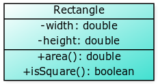
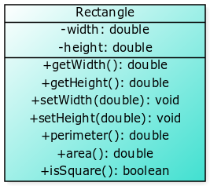

Once the object is created, we can start operating on it.
1
2
3
4
5
Rectangle r = new Rectangle();
r.width = -5; // :o :O
r.height = 8;
System.out.println(r.area());
//displays -40 :'(
1
2
3
4
5
6
7
8
9
10
11
12
13
14
15
public class Rectangle {
private double width;
private double height;
public double area() {
return width * height;
}
public boolean isSquare() {
if(width==height)
return true;
else
return false;
}
}

Now, the instance variables width and height are visible only within
the class definition.
We access (read and write) private instance variables through public
methods called getters and setters.
getters return the value of the instance variable to the caller.
setters set the value supplied by the caller to the instance
variables.
1
2
3
4
5
6
7
8
9
10
11
12
13
14
public class Rectangle {
private double width, height;
public double getWidth() {
return width;
}
public void setWidth(double w) {
width = Math.abs(w);
}
//...same for height
//rest of the class definition...
}
You can see that we validated the passed values before assigning to the
instance variable as width = Math.abs(w). This is a typical case and
setters are in charge of validating data before assigning it to the
instance variables.

Add getters and setters to class
Circle. The setter should result in radius becoming zero if the parameter passed is not positive.SOLUTION
Writing client
Write a client (code sitting outside
Circle.java, for example, in the main method of another class) that declares and instantiates objectmyCircleof classCirclethat has a radius of 1.8, displays radius ofmyCircleand increases radius ofmyCircleby 1.4SOLUTION